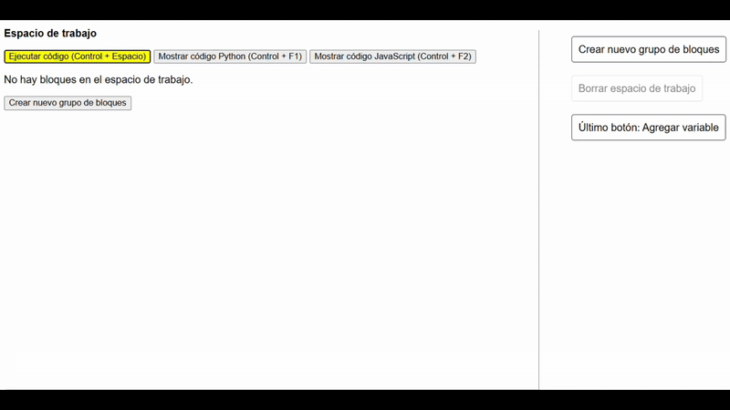
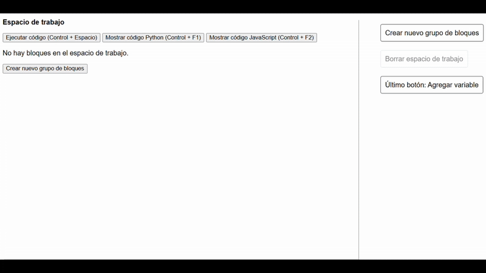
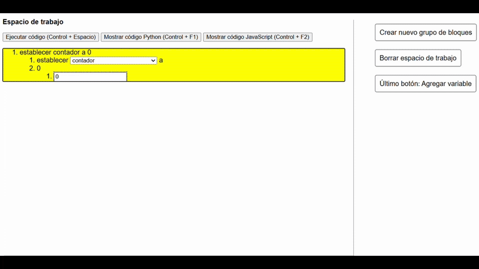
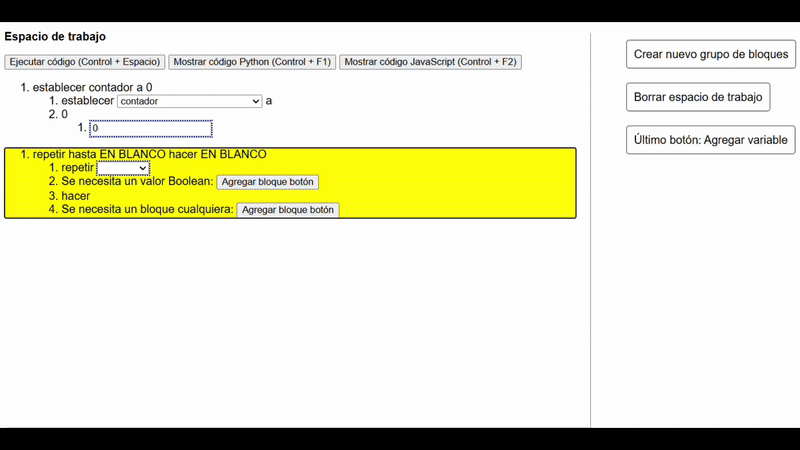
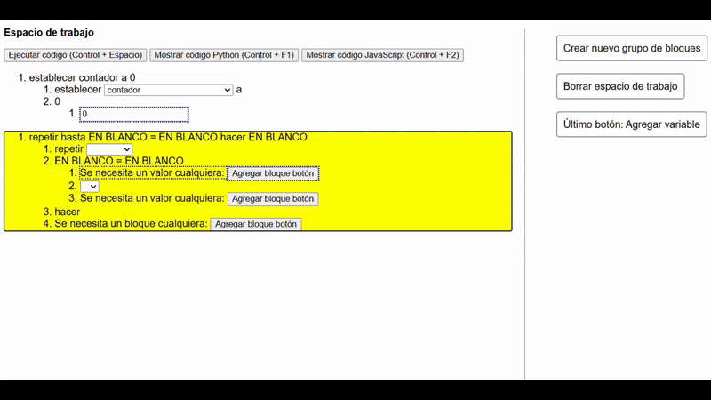
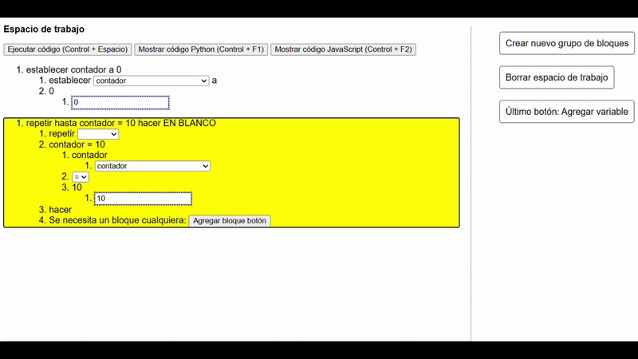
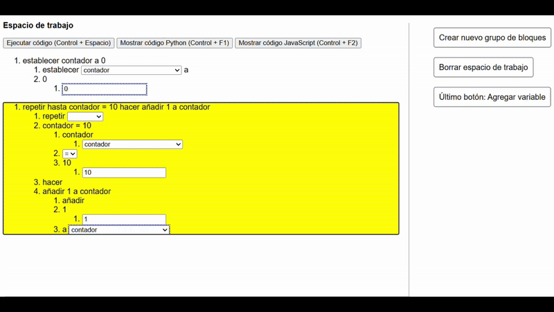
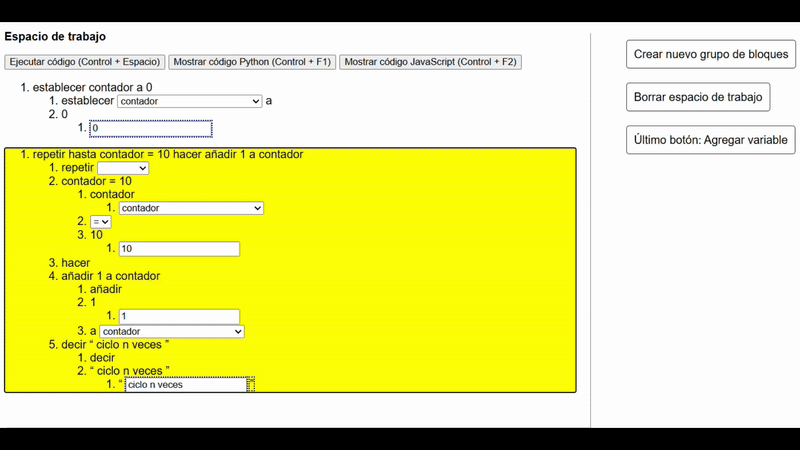

¡Bienvenido al tutorial 4.2 de Accessible Blockly!
Esta es una nueva ventana del navegador, si quieres cambiar de ventana puedes presionar Alt + Tab, y si quieres cerrar esta ventana puedes presionar Control + W.
Recuerda que los pasos deben realizarse en la ventana anterior llamada "Tutorial Blockly", por lo que te recomendamos que tengas ambas ventanas
abiertas para que puedas seguir las instrucciones.
En este tutorial haremos lo mismo que en el tutorial anterior, pero esta vez realizaremos el ciclo de manera manual con un contador.
Esto nos permite tener un mayor control sobre el ciclo, ya que podemos modificar el contador y modificar las condiciones del ciclo en cualquier momento.
Para realizar este tutorial debes seguir los siguientes pasos:
- Empezaremos creando una variable llamada "contador" con el botón "Agregar variable".

- Luego debemos asignarle un valor a este contador, para eso creamos el bloque "establecer contador a EN BLANCO", asignar el bloque "123" y modificarlo por "0".

- Una vez ya asignado el valor al contador, debemos crear el ciclo, para eso creamos el bloque "repetir mientras EN BLANCO hacer EN BLANCO",
y modificamos el valor de "repetir mientras" por "repetir hasta".

- En el primer espacio en blanco debemos crear la condición del ciclo, para eso agregamos el bloque "EN BLANCO = EN BLANCO".

- En la condición que acabamos de crear debemos modificar el primer valor por "contador",
y el segundo valor por el bloque de número "123" y lo cambiamos por "10", este último valor es la cantidad de veces que se repetirá el ciclo.

- Si hiciste todo bien, el código hasta ahora debería quedar como "repetir hasta contador = 10 hacer EN BLANCO".
Lo que significa que el ciclo se repetirá hasta que el contador sea igual a 10, por lo que nos falta aumentar el contador en cada repetición del ciclo.
Para lograr esto debemos agregar el bloque "añadir 1 a contador" en el espacio en blanco que queda.

- Con esto ya tenemos un ciclo que va a repetirse hasta que contador sea 10, y en cada repetición del ciclo se aumentará en 1 el valor de contador.
Sin embargo, aún no hemos hecho nada con el ciclo, por lo que ahora vamos a agregar un nuevo bloque dentro del ciclo.
Para lograr esto debemos posicionarnos en el último bloque "añadir 1 a contador", presionar Enter para seleccionar "Agregar bloque después"
y finalmente crear el bloque "decir 'abc'" donde podemos colocarle lo que queramos.

- Una vez modificada la frase, presionamos Control + Espacio para ejecutar el programa.
Recuerda que puedes escuchar el código traducido a Python y JavaScript presionando Control + F1 y Control + F2 respectivamente.

- Ahora ya sabes como crear un ciclo de manera manual, quizás pienses que es demasiado complicado,
sin embargo es muy importante conocerlo porque en muchos lenguajes de programación es el único tipo de ciclo que existe.
Espero que hagas podido entender bien cómo funcionan los ciclos, ya que el próximo tutorial será el último y como siempre será una tarea que debes realizar tú mismo.
Por lo que te invitamos a vuelvas a hacer este tutorial si no te quedó muy claro y nos vemos en el próximo tutorial. Pero antes no te olvides de cerrar esta ventana presionando Control + W.